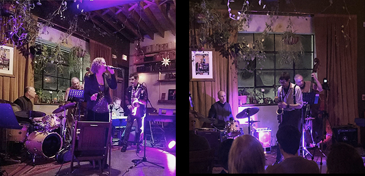

Keith Evan Green
musical, creative drumming
A B O U T
Keith Evan Green is a drummer and percussionist
based in Ithaca, New York. He plays music of all
styles, with a focus on small-group jazz.
Green studied drums, vibraphone, and numerous
other percussion instruments
with Glenn Weber at
the New Jersey School of Percussion. He began his
university studies as a music major at Northwestern
University's School of Music (Evanston, Illinois). In
his early years as percussionist, Green performed
in the New Jersey All-State Band and in the Fairleigh
Dickinson University Orchestra which performed at
Carnegie Hall during his association. At the same
time, Green played drums throughout the NYC-metro
area with a band led by Larry Ferrara, pianist and
long-time director of music performance at NYU.
Outside of New York,
Green performed and taught
drums in Seattle and San Francisco.
While advancing a career as a Cornell University
professor, Green performs with his jazz group,
Firefly Trio (videos below), often featuring jazz
vocalist Diana Leigh Diana Leigh. Green also performs with
legendary mutli-reedist Bill Easley and, on occasion,
with trumpet and cornet player Frank Campos and
guitarists Dennis Winge and Dave Richman.
Keith Evan Green is an endorser of CANOPUS drums.
C O N T A C T & E N D O R S E M E N T
keithevangreen@gmail.com
M U S I C | Firefly Trio
Keith Evan Green (d), Kevin Jones (g), Stu Zimny (b)
• "Days of Wine and Roses" - link to video
• "West Coast Blues" - link to video
• "Winter Willow" (K. Jones) - link to video
• "Half Full" (S. Carrithers) - link to video
M U S I C | Firefly Trio with Diana Leigh (vocals)
Green (d), Jones (g), Zimny (b), with Diana Leigh
• link to videos
M U S I C | Dennis Winge: Blue Train Blues
Dennis Winge (g), Doug Robinson (b), Keith Evan Green (d),
• "It's Not My Cross to Bear" - link to video
• "Close To You" - link to video
S H O W S I N 2 0 2 5 | link to earlier shows
10.24.25 | The Downstairs (Ithaca, NY)
Firefly Trio & Friends | link to info
08.06 & 08.20.2025 | Deep Dive (Ithaca, NY)
Firefly Trio | link to info
08.02.2025 | Buttonwood Grove Winery (Ithaca, NY)
Diana Leigh Quartet
07.23.2025 | Deep Dive (Ithaca, NY)
Firefly Trio | link to info
07.22.2025 | Fireflight Camps / La Tourelle
Diana Leigh Quartet | tlink to info
07.12.2025 | Buttonwood Grove Winery (Ithaca, NY)
Diana Leigh Quartet
07.09.2025 | Deep Dive (Ithaca, NY)
Firefly Trio | link to info
06.30.25 | The Downstairs (Ithaca, NY)
Collab Jazz: Paul & Jacob Merrill (trpt & sax), Nate Richardson (g), Andrew Battles (b) | link to info
06.25.2025 | Deep Dive (Ithaca, NY)
Firefly Trio | link to info
06.15.2025 | Stonecat Cafe (Hector, NY)
Dave Richman Trio | link to info
06.12.2025 | Billsboro Winery (Geneva, NY)
Firefly Trio | link to info
06.11.2025 | Deep Dive (Ithaca, NY)
Firefly Trio | link to info
06.07.2025 | Cornell U. (Ithaca, NY)
Bill Easley Quartet with Zack Knewstub (p), Michael Bates (b)
05.28.2025 | Deep Dive (Ithaca, NY)
Firefly Trio | link to info
05.24.2024 | Buttonwood Grove Winery (Ithaca, NY)
Diana Leigh Quartet
05.18.2025 | Hosmer Winery (Ovid, NY)
Firefly Trio | private event
05.14.2025 | Deep Dive (Ithaca, NY)
Firefly Trio | link to info
04.02 & 04.16.2025 | Deep Dive (Ithaca, NY)
Firefly Trio with Frank Campos, trumpet | link to info
03.05 & 03.19.2025 | Deep Dive (Ithaca, NY)
Firefly Trio | link to info
02.05 & 02.19.2025 | Deep Dive (Ithaca, NY)
Firefly Trio | link to info
February 2025 Residency | The Downstairs (Ithaca, NY)
Firefly Trio with Diana Leigh & Friends | link to info
02.01 with Mike Titlebaum, sax; Catherine Gale, vocals
02.08 with Mark Devokaitis, sax; Marcie Beaton, vocals
02.15 with Brian Earle, clarinet; vocalists: Alice Saltonstall, Margaret Wakeley, Dave Davies
02.28 with Frank Campos, trumpet
01.22.2025 | Deep Dive (Ithaca, NY)
Firefly Trio | link to info
P H O T O S
Firefly Trio
10.01.2022 | Apple Harvest Festival (Ithaca, NY)

Dennis Winge's Blue Train | link, "Not My Cross to Bear" | link, "Close To You"
06.03.2024 | Liquid State Brewing Company (North Shore, NY)

Firefly Trio with Diana Leigh
12.14.2022 | Cornell University

Jazz Incidentals with Diana Leigh | video link for full show
03.13.2021 | Foundation of Light (Ithaca, NY - live stream during pandemic)

Expressions in Jazz
01.29.2020 | Argos Warehouse (Ithaca, NY)

S H O W S I N 2 0 2 4 A N D E A R L I E R
11.13 & 12.11.2024 | Deep Dive (Ithaca, NY)
Firefly Trio | link to info
11.03.2024 | Geneva On The Lake (Geneva, NY)
Dave Richman Trio | link to info
10.02, 10.16 & 10.30.2024 | Deep Dive (Ithaca, NY)
Firefly Trio with Bill Easley | link to info
09.22.2024 | Porchfest Ithaca (442 N Aurora St., Ithaca, NY)
Diana Leigh Quartet
09.19.2024 | Fireflight Camps / La Tourelle
Diana Leigh Quartet | link to info
09.18.2024 | Deep Dive (Ithaca, NY)
Firefly Trio with Bill Easley | link to info
09.15.2024 | "Swingin' on Cayuga"
Diana Leigh Quartet | Stewart Park (Ithaca, NY)
09.07.2024 | Gala Reception @ the Ithaca Convention Center
Diana Leigh Quartet | private event
09.05.2024 | Billsboro Winery (Geneva, NY)
Firefly Trio | link to info
09.04.2024 | Deep Dive (Ithaca, NY)
Firefly Trio with Bill Easley | link to info
08.29.2024 | Six Mile Creek Winery (Ithaca, NY)
Diana Leigh Quartet | link to info
08.21.2024 | Deep Dive (Ithaca, NY)
Firefly Trio with Bill Easley | link to info
08.18.2024 | Damiani Wine Cellars (Burdett, NY)
Dave Richman Trio | link to info
08.11.2024 | Brooktondale Community Center (Ithaca, NY)
Diana Leigh Quartet
08.07.2024 | Deep Dive (Ithaca, NY)
Firefly Trio with Bill Easley | link to info
08.04.2024 | Stonecat Cafe (Hector, NY)
Dave Richman Trio | link to info
08.01.2024 | Downtown Ithaca Summer Concert Series
Firefly Trio with Diana Leigh | link to info
07.26.2024 | Garrett's Brewing Co. (Trumansburg, NY)
Diana Leigh Quartet | link to info
07.25.2024 | Watkins Glen Harbor Hotel (Watkins Glen, NY)
Diana Leigh Quintet w/ Bill Easley (sax) and Zack Knewstub (piano)
07.24.2024 | Deep Dive (Ithaca, NY)
Firefly Trio with Bill Easley | link to info
07.14.2024 | Brooktondale Community Center (Ithaca, NY)
Diana Leigh Quartet
07.10.2024 | Deep Dive (Ithaca, NY)
Firefly Trio with Bill Easley | link to info
07.06.2024 | Buttonwood Grove Winery (Ithaca, NY)
Diana Leigh Quartet
06.11.2024 | Fireflight Camps / La Tourelle
Diana Leigh Quartet | link to info
05.31.2024 | Liquid State Brewing Co. (Romulus, NY)
Blue Train (Dennis Winge, Doug Robinson, Keith Evan Green)
04.17, 05.01, 05.15 & 05.29.2024 | Deep Dive (Ithaca, NY)
Firefly Trio | link to info
04.06.2024 | Geneva Jazz Festival 2024 (Zugibe Vineyards Stage)
Greg Lofaro Quartet link to info
03.29.2024 | Longview (Ithaca, NY)
Ken Zeserson, Jerry Hilliker, Stu Zimney, & Keith Evan Green
03.06, 03.20, & 04.03.2024 | Deep Dive (Ithaca, NY)
Firefly Trio with Greg Lofaro | link to info
01.24, 02.07, & 02.21.2024 | Deep Dive (Ithaca, NY)
Firefly Trio with Greg Lofaro | link to info
01.19.2024 | Longview Senior Living Community (Ithaca, NY)
Firefly Trio | link to info
12.16.2023 | Argos Warehouse (Ithaca, NY)
Diana Leigh's Holiday Spectacular | link to purchase tickets
12.13.2023 | Deep Dive (Ithaca, NY)
Firefly Trio with Greg Lofaro | link to info
12.01.2023 | Billsboro Winery (Geneva, NY)
Firefly Trio | link to info
11.25.2023 | private events (Ithaca, NY)
Diana Leigh Quartet
11.17.2023 | private event (Ithaca, NY)
Firefly Trio
11.01 & 11.15 & 11.29.2023 | Deep Dive (Ithaca, NY)
Firefly Trio with Greg Lofaro | link to info
10.18.2023 | Deep Dive (Ithaca, NY)
Firefly Trio with Greg Lofaro | link to info
10.04.2023 | Deep Dive (Ithaca, NY)
Firefly Trio with Greg Lofaro | link to info
10.03.2023 | Fireflight Camps / La Tourelle
Diana Leigh Quartet | link to info
09.30.2022 | Apple Harvest Festival (Ithaca, NY)
Diana Leigh Quartet
09.24.2022 | Porchfest Ithaca (Ithaca, NY)
Diana Leigh Quartet
09.21.2023 | Community School of Music and Arts (Ithaca, NY)
Diana Leigh & the Shorty Georges
09.16.2023 | Buttonwood Grove Winery (Ithaca, NY)
Diana Leigh Quartet | private "wine club" event
09.14.2023 | Billsboro Winery (Geneva, NY)
Firefly Trio | link to info
09.09.2023 | Buttonwood Grove Winery (Ithaca, NY)
Diana Leigh Quartet | private "wine club" event
09.06.2023 | Deep Dive (Ithaca, NY)
Firefly Trio with guest Diana Leigh | link to info
08.23.2023 | Deep Dive (Ithaca, NY)
Firefly Trio with Greg Lofaro | link to info
08.09.2023 | The Starlite Room (Elmira, NY)
Hugh Douglass Quartet
| link to info
07.30.2023 | Cayuga Shoreline (Interlaken, NY)
Diana Leigh Quartet | link to info
07.26.2023 | Deep Dive (Ithaca, NY)
Firefly Trio with Greg Lofaro | link to info
07.23.2023 | Cayuga Shoreline (Interlaken, NY)
Greg Lofaro Quartet | link to info
07.18.2023 | Fireflight Camps / La Tourelle
Diana Leigh Quartet | link to info
06.28.2023 | Deep Dive (Ithaca, NY)
Firefly Trio with Greg Lofaro | link to info
06.26.2023 | South Hill Cider (Ithaca, NY)
Diana Leigh Quartet | link to info
06.18.2023 | Cayuga Shoreline (Interlaken, NY)
Greg Lofaro Quartet | link to info
06.17.2023 | The Downstairs (Ithaca, NY)
Firefly Trio / Diana Leigh Quartet | link to info
06.14.2023 | Deep Dive (Ithaca, NY)
Firefly Trio with Greg Lofaro | link to info
06.11.2023 | Horseheads Brewing (Seneca Lake, NY)
Firefly Trio | link to info
06.02.2023 | Billsboro Winery (Geneva, NY)
Firefly Trio | link to info
05.31.2023 | Deep Dive (Ithaca, NY)
Firefly Trio with Greg Lofaro | link to info
05.21.2023 | Lakeshore Winery (Romulus, NY)
Greg Lofaro Quartet | Fundraiser for Beverly Animal Shelter
05.20.2023 | Taughannock Falls State Park Concert
Diana Leigh Quartet with Cookie Coogan | Ed Swayze's birthday
05.18.2023 | Six Mile Creek Winery (Ithaca, NY)
Diana Leigh Quartet | link to info
05.17.2023 | Deep Dive (Ithaca, NY)
Firefly Trio with Greg Lofaro | link to info
05.03.2023 | Deep Dive (Ithaca, NY)
Firefly Trio with Greg Lofaro | link to info
04.18.2023 | Brooktondale Community Center (Ithaca, NY)
Diana Leigh Quartet
04.07.2023 | Seventh Of Jazz Lounge (Ithaca, NY)
Diana Leigh Quartet | Billie Holiday's Birthday | link to info
03.03.2023 | Seventh Of Jazz Lounge (Ithaca, NY)
Firefly Trio | link to info
02.15.2023 | The Downstairs (Ithaca, NY)
Firefly Trio | link to info
02.05.2023 | Six Mile Creek Winery (Ithaca, NY)
Diana Leigh Quartet | link to info
12.14.2022 | Cornell University (Ithaca, NY)
Firefly Trio featuring vocalist Diana Leigh
11.17.2022 | Community School of Music and Arts (Ithaca, NY)
Diana Leigh & the Shorty Georges
10.01.2022 | Apple Harvest Festival (Ithaca, NY)
Firefly Trio
07.02.2022 | Taughannock Falls State Park Summer Concert Series (NY)
Diana Leigh & the Shorty Georges | link to info & tickets
07.01.2022 | Argos Inn (Ithaca, NY) - private event
Barkada with Kevin Jones (guitar), Seth Carrithers (b), Diana Leigh (vocals)
06.18.2022 | Johnson Museum of Art, Cornell University (NY) - private event
Dave Richman Trio
05.19.2022 | Six Mile Creek Winery (Ithaca, NY)
Diana Leigh & the Shorty Georges
08.29.2021 | Agava (Ithaca, NY)
Barkada with Kevin Jones (guitar), Stu Zimny (b), Diana Leigh (vocals)
08.05.2021 | Music in the Park (Seneca Falls, NY)
Diana Leigh and the Shorty Georges
08.01.2021 | Brews and Brats at Autumn View (Trumansburg, NY)
Firefly Trio | Keith Evan Green (dr), Kevin Jones (guitar), Stu Zimny (bs)
07.23.2021 | Brews and Brats at Autumn View (Trumansburg, NY)
Jazz Incidentals Quartet featuring Diana Leigh
06.18.2021 | Brews and Brats at Autumn View (Trumansburg, NY)
Jazz Incidentals Quartet featuring Diana Leigh
06.12.2021 | Private Party (Waverly, PA)
Diana Leigh and the Shorty Georges
05.22.2021 | The Trumansburg Conservatory of Fine Arts (Trumansburg, NY)
Diana Leigh & Friends: An evening with Ella | link to info & tickets
05.14.2021 | Brews and Brats at Autumn View (Trumansburg, NY)
Jazz Incidentals Quartet featuring Diana Leigh
03.13.2021 | Foundation of Light (Ithaca, NY) | link to video of full show
Jazz Incidentals Quartet featuring Diana Leigh
11.25.2020 | Private Party (Ithaca, NY)
Diana Leigh and the Shorty Georges
09.27.2020 | Brews and Brats at Autumn View (Trumansburg, NY)
Jazz Incidentals Quartet
09.18.2020 | Brews and Brats at Autumn View (Trumansburg, NY)
Jazz Incidentals Quartet
07.23.2020 | Music in the Park (Seneca Falls, NY)
Diana Leigh and the Shorty Georges
02.08.2020 | St. Paul's Methodist Church (Ithaca, NY)
Diana Leigh and the Shorty Georges
01.29.2020 | Argos Warehouse (Ithaca, NY)
"Expressions in Jazz"
12.07.2019 | Ivan's Bar (Cortland, NY)
Dave Richman and the Po' Boys
|